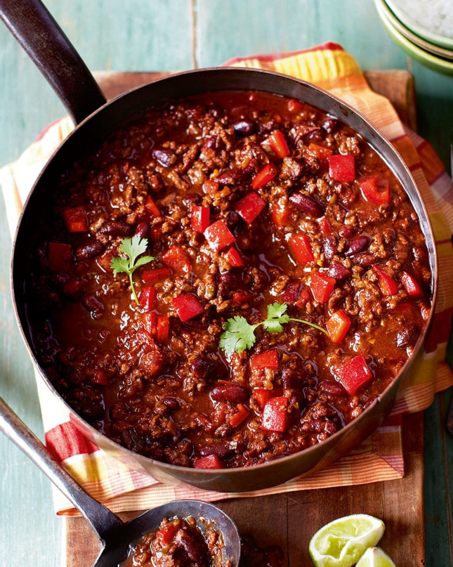

Chilli con Carne

Description
This chili recipe is many years in the making and I have won several awards with it. I think you'll be pleased with it. You can alter it to your own spice levels to achieve your perfect chili. Garnish with shredded mozzarella cheese, and use corn chips for dipping.
Ingredients
- 4 tablespoons vegetable oil
- 1 green bell pepper, chopped
- 1 yellow onion, chopped
- 2 ½ pounds lean ground beef
- 2 beef bouillon cubes
- ⅔ cup red wine
- 2 (16 ounce) cans whole peeled tomatoes, chopped, juice reserved
- garlic cloves, crushed
- 1 (12 ounce) can tomato paste
- 1 ½ teaspoons paprika
- 2 ½ teaspoons chili powder
- 1 teaspoon cayenne pepper
- 2 ½ teaspoons dried basil
- ½ teaspoon dried oregano
- 2 tablespoons dried parsley
- ½ teaspoon black pepper
- 1 teaspoon salt
- 12 drops hot pepper sauce (e.g. Tabasco™)
- 1 (15 ounce) can kidney beans, drained
- 3 tablespoons flour
- 3 tablespoons corn meal
- ½ cup water
Steps
- Heat oil in a large saucepan over medium heat. Cook green pepper, and onion, until softened. Add the ground beef and cook until browned. Crumble over bouillon cubes, and stir in wine; continue to cook for a few minutes. Stir in chopped tomatoes, garlic, and tomato paste. Season with paprika, chili powder, cayenne pepper, basil, oregano, and parsley. Stir in salt and pepper.
- Bring to a boil over high heat. Reduce heat to medium low. Cover, and simmer for 90 minutes, stirring occasionally.
- Stir in kidney beans, and hot pepper sauce. You can add the reserved tomato juice if more liquid is needed. Continue to simmer for an additional 30 minutes.
- In a small bowl, whisk together the flour, corn meal, and water until smooth. Stir into chili, and cook for a further 10 minutes, or until chili has thickened up.